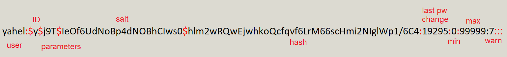

opens the shadow file
contains the hash's of the passwords of system users
SHOULD ONLY BE GAINED ACCESS BY ROOT

ID - algorithm used, see man 5 crypt for more info
parameters - parameters used with the algoritm - further read
Last password change (lastchanged) - The date of the last
password change, expressed as the number of days since Jan 1,
1970 (Unix time). The value 0 has a special meaning, which is that
the user should change her password the next time she will log in the
system. An empty field means that password aging features are
disabled.
Minimum : The minimum number of days required between
password changes i.e. the number of days left before the user is
allowed to change her password again. An empty field and value 0
mean that there are no minimum password age.
Maximum - The maximum number of days the password is valid,
after that user is forced to change her password again.
Warn - The number of days before password is to expire that user is
warned that his/her password must be changed
bewtween the empty fields (eg :empty1:empy2:empy3)
empty1 - Inactivity period - The number of days after password expires that account is
disabled.
emtpy2 - Expiration date - The date of expiration of the account, expressed as the
number of days since Jan 1, 1970.
empty3 - unused